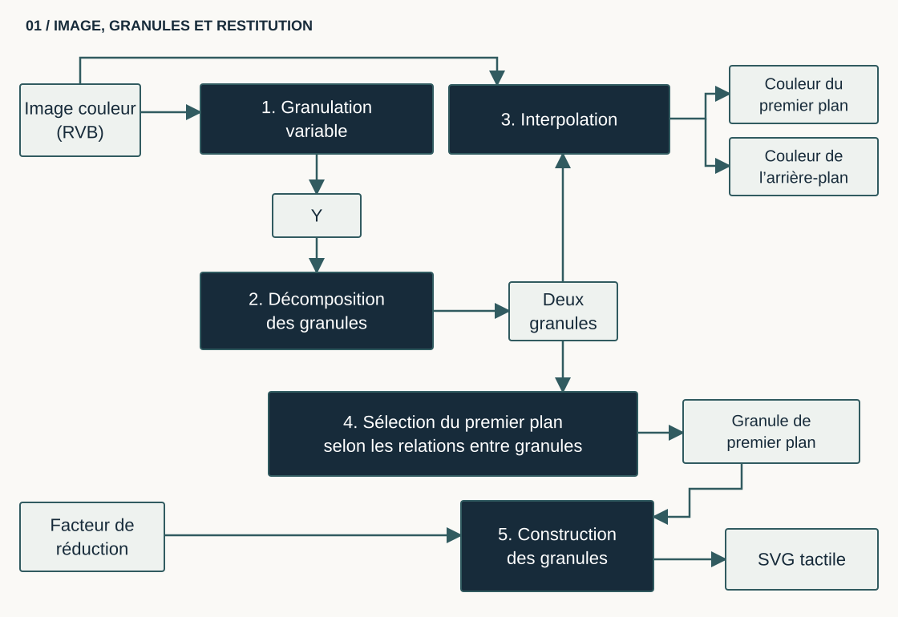
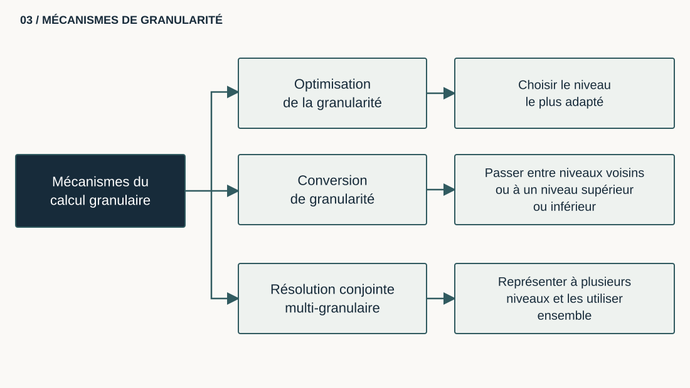
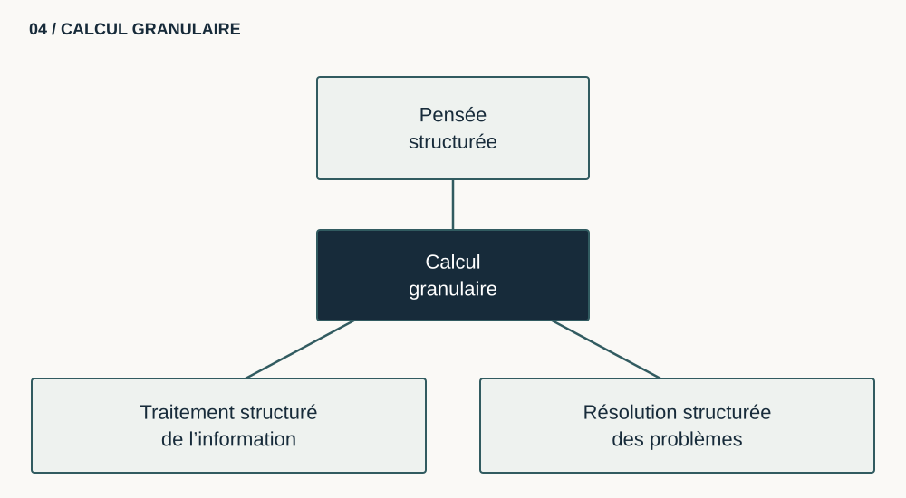
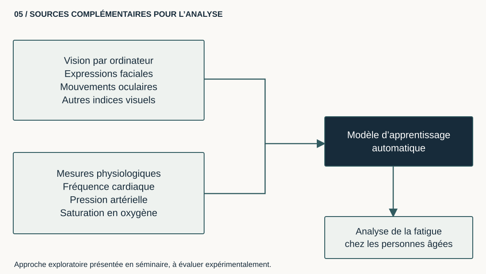
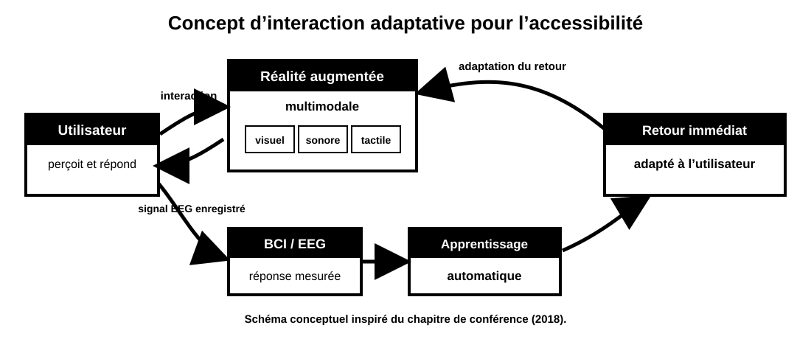

Sami Rojbi · thèse soutenue en 2022
J’ai assuré la moitié de l’encadrement de cette thèse en codirection internationale. Sami a soutenu ses travaux sur l’adaptation tactile de documents numériques à Tunis le 3 décembre 2022.
Travaux scientifiques
Je m’intéresse à la façon dont on peut explorer une image ou lire une carte par le toucher. D’autres travaux collectifs portent sur les signaux du visage ou du cerveau et sur ce qu’ils permettent de reconnaître, de la fatigue au volant aux étapes d’un geste de la main.
Axe 1
Avec Sami Rojbi et Mohamed Salah Gouider, j’ai étudié comment les personnes qui ne voient pas une image peuvent en comprendre le contenu sur le Web.
Les quatre schémas sont adaptés de mon séminaire au département Ingénierie – Cognition – Handicap (ICH). La granularité désigne le niveau de détail que l’on conserve dans une représentation.




Axe 2

Travail associé : Parallel Statistical and Machine Learning Methods for Estimation of Physical Load (2018).
Revenir aux axes de recherche ↑Axe 3
J’ai participé à la rédaction et à la révision d’une étude collective sur les gestes de la main. À partir d’enregistrements d’électroencéphalographie (EEG), l’équipe a examiné comment un algorithme distingue le premier contact avec un objet, son soulèvement et d’autres étapes du geste.
Les enregistrements proviennent du jeu public grasp-and-lift (GAL) de Luciw, Jarocka et Edin. Les chiffres ci-dessous décrivent le jeu de données d’origine.
Les figures 2 et 8 de Yuri Gordienko, Nikita Gordienko, Vladyslav Taran, Anis Rojbi, Sergii Telenyk et Sergii Stirenko (2025) sont reproduites avec un aperçu réduit et un agrandissement à la résolution de l’éditeur. Article dans Frontiers in Neuroinformatics · CC BY 4.0.

Les rangées correspondent à six étapes du geste : début du mouvement de la main (HandStart), premier contact d’un doigt (FirstDigitTouch), début de la prise de charge (BothStartLoadPhase), soulèvement (LiftOff), remise en place (Replace) et relâchement des doigts (BothReleased). Les six colonnes montrent les potentiels mesurés sur le cuir chevelu à −100, 0, 100, 150, 250 et 300 millisecondes par rapport à l’événement.
L’amplitude est exprimée en microvolts (µV). Le rouge correspond aux potentiels positifs, le bleu aux potentiels négatifs et le blanc aux valeurs proches de zéro. Chaque rangée possède sa propre échelle de couleur : les couleurs ne se comparent donc pas directement d’une action à l’autre.

L’axe horizontal présente les six actions. L’axe vertical indique l’AUC moyenne, c’est-à-dire l’aire sous la courbe ROC. Cette mesure traduit la capacité du modèle à distinguer une action quand on fait varier le seuil de décision. La moyenne porte sur les longueurs de segment testées.
Pour chaque action, la barre centrale (position 0,5) est la plus haute dans les deux panneaux. Les auteurs jugent la différence entre le début (position 0) et la fin (position 1) non significative. L’effet du bruit ajouté dépend du geste et de la mesure retenue.
Axe 4
Avec Nizar Bouhlel, j’ai présenté à ASSETS 2014 un outil qui aide les spécialistes à transformer une carte géographique en carte tactile.

Le logiciel part d’une image de carte. Il en sépare et simplifie les régions, puis leur attribue des textures tactiles. La reconnaissance optique de caractères (OCR) identifie les libellés à transcrire en braille. Le spécialiste peut vérifier et ajuster la carte obtenue.
Publication : Nizar Bouhlel et Anis Rojbi, New tools for automating tactile geographic map translation, ACM ASSETS ’14, 2014, p. 313–314. Consulter la notice et le résumé de l’article.
Revenir aux axes de recherche ↑Axe 5
Dans un chapitre collectif des actes de FICC 2018, nous avons proposé d’associer la réalité augmentée à une interface cerveau-machine (brain–computer interface, BCI) pour adapter les retours proposés à l’utilisateur.

Dans la boucle proposée, l’interface de réalité augmentée présente une information visuelle, sonore ou tactile. L’interface cerveau-machine enregistrerait la réponse EEG de la personne. Un modèle d’apprentissage automatique interpréterait cette réponse pour ajuster le signal présenté ensuite.
Publication : User-Driven Intelligent Interface on the Basis of Multimodal Augmented Reality and Brain-Computer Interaction for People with Functional Disabilities, dans Advances in Information and Communication Networks (2019), p. 612–631. Conférence FICC 2018 ; première mise en ligne le 6 décembre 2018. Consulter le chapitre chez Springer.
Revenir aux axes de recherche ↑Doctorat et coopération scientifique
Les deux thèses ci-dessous portent sur l’accès tactile aux documents et sur l’analyse de données de santé.
J’ai assuré la moitié de l’encadrement de cette thèse en codirection internationale. Sami a soutenu ses travaux sur l’adaptation tactile de documents numériques à Tunis le 3 décembre 2022.
Depuis 2024, je participe à son encadrement doctoral à hauteur de 25 %, en cotutelle entre Paris 8 et l’Université de Tunis. Sa recherche porte sur l’apprentissage automatique appliqué au suivi et à la prédiction en santé. Projet de thèse de Wiem Ben Ghozzi.